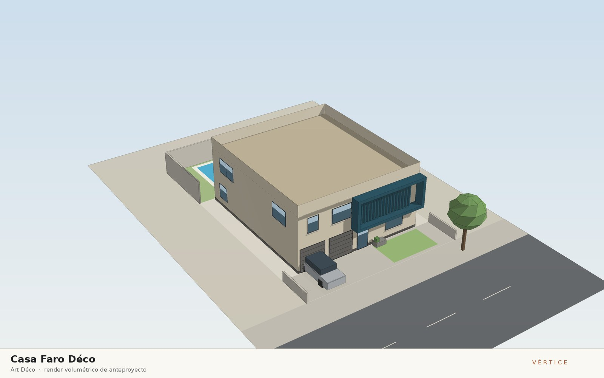
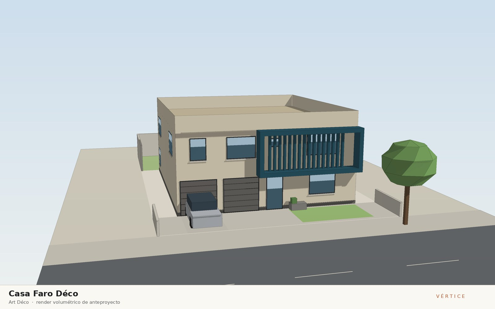
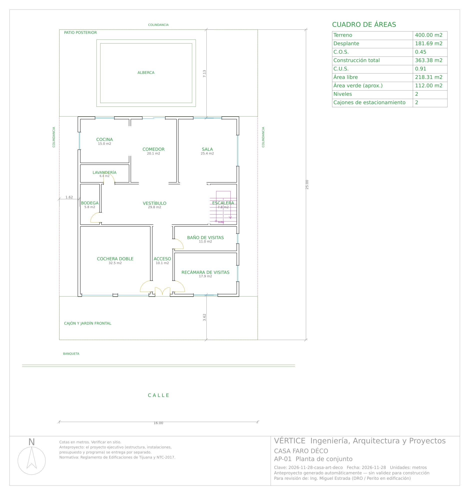
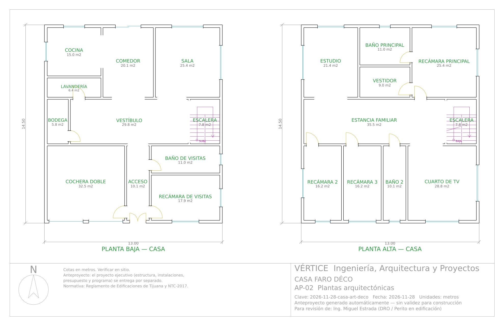
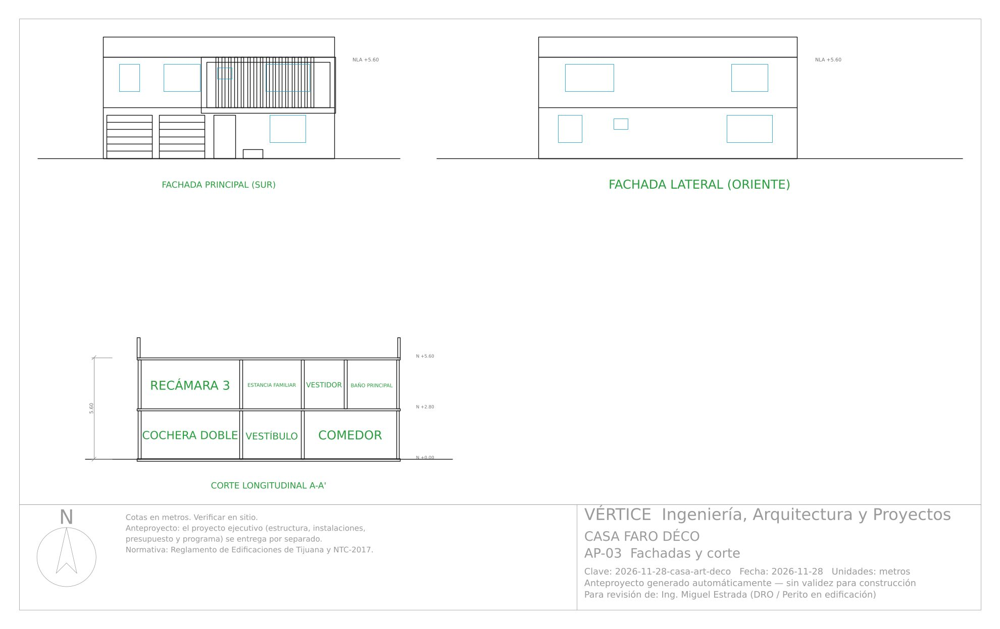

28 de noviembre de 2026 · Casa habitación
Casa Faro Déco
Corriente: Art Déco

Concepto
Vivienda de dos niveles en un lote de 16 x 25 m en Tijuana que retoma el Art Déco que la ciudad conoció en el Agua Caliente de los años veinte y treinta: volúmenes de aplanado marfil coronados por un pretil alto de 1.10 m y una composición vertical que se lee como un pequeño faro urbano. La fachada sur, la más asoleada, se ordena con parteluces verticales de concreto en verde petróleo que dan ritmo a la composición y cortan el sol bajo de la tarde, y un marco volumétrico en planta alta enmarca el cuarto de TV y el baño de la zona de recámaras como la pieza central de la fachada, mientras la recámara principal se retira al jardín norte, lejos del ruido de la calle. Al pie, una jardinera de concreto con remate de latón acompaña el acceso entre la puerta y la ventana de la recámara de visitas. Los vanos son medidos (proporción 0.38) para que domine el muro, y la brisa del poniente cruza la casa por el vestíbulo hacia el jardín norte. El partido 'recámara en planta baja' da una recámara de visitas con baño completo sin escaleras y un estudio en planta alta.
Dictamen del arquitecto
- Terreno de 16.00 x 25.00 m (400 m²); casa de 12.75 x 14.25 m a ejes en 2 niveles, 363.4 m² construidos con desplante de 181.7 m²: COS 0.45 y CUS 0.91, 3.62 m de frente libre, 7.13 m de patio posterior con alberca y pasillos laterales de 1.62 m (poniente) y 1.38 m (oriente); área libre 218.3 m² (~112 m² de jardín). Uso habitacional unifamiliar; COS y CUS por verificar con el PDU de Tijuana.
- Partido 'recámara_pb' sin espejo (cochera doble al poniente), distinto de los dos últimos proyectos de 16 x 25 m (clásico el 20-nov y sala al frente en espejo el 24-nov): recámara de visitas de 5.15 x 3.47 m (17.9 m²) en planta baja con baño completo de 11.0 m² junto a ella, y estudio de 21.4 m² en planta alta.
- Art Déco con tres rasgos que trabajan juntos en la fachada sur: marco volumétrico de concreto en planta alta sobre el cuarto de TV y el Baño 2, parteluces verticales en verde petróleo dentro del marco que dan la verticalidad de la corriente y sombrean esas ventanas, y una jardinera de concreto con remate de latón junto al acceso; pretil de 1.10 m (N +6.70) sobre azotea plana y proporción de vano 0.38. No repite la pérgola ni el porche de ayer; se descartó la celosía para no cargar una fachada que ya tiene dos portones.
- Recorrido acceso (puerta doble de 1.20 m) → vestíbulo de 29.8 m² → sala, comedor y cocina al jardín norte; lavandería y bodega desde el vestíbulo; cochera con puerta de servicio al acceso. Zona privada en planta alta alrededor de la estancia familiar (35.5 m²) sin entrar por locales ajenos; vestidor y baño principal sólo desde la recámara principal (25.4 m²). Recámaras ≥ 2.90 m de lado y ≥ 16.2 m², todas con ventana al exterior; escalera de 1.15 m con peralte 17.5 cm y huella 29 cm; altura libre 2.66 m en ambos niveles.
- Baños sin abrir a cocina ni comedor; cocina abierta al comedor. Clósets de recámaras 2 y de visitas reubicados a muros ciegos para no tapar ventanas (corrección del motor en esta fecha).
Dictamen de ingeniería
- Construible conforme a norma: revisión de coordinación con 0 errores y 0 avisos en 28 verificaciones (arquitectura, estructura, instalaciones, acabados, presupuesto y normativa urbana).
- Mampostería confinada de block de 15 cm en ambas direcciones con castillos K-1 15x20 (63 en PB y 59 en PA) y 17 trabes: T-1 de carga 30x55 de 5.60 m sobre la cochera doble apoyada en columna C-1 15x30 entre portones, y cerramientos de 15x30 a 20x35; losas macizas de 14 cm en entrepiso y azotea (mínimos 13.1 y 13.7 cm). 2 muros de planta alta sin apoyo continuo quedan como divisorios ligeros de tablaroca. Sismo por método simplificado (c = 0.213, T = 0.178 s): VR = 85.4 t en X y 92.0 t en Y ≥ Vu = 83.6 t; la dirección X queda justa (2 % de holgura), por lo que no deben abrirse vanos adicionales en muros X sin recalcular.
- Cimentación con zapatas corridas de 50 cm x 20 cm desplantadas a -0.80 m (ZC-1 perimetral q = 5.10 t/m², ZC-2 interior q = 9.74 t/m² ≤ 12 t/m² supuesta), armado #4 @ 33 cm + 4 #3; 89.6 m³ de concreto y 8,416 kg de acero en la obra.
- Hidrosanitaria: 6 ocupantes x 150 L/día (0.9 m³/día), toma de 13 mm, alimentación de 25 mm, cisterna de 2 m³ con hidroneumático de 1/2 HP, 24 UM (≈ 1.28 L/s) y calentador de paso a gas; 27 UD a colector de PVC de 100 mm al 2 % hacia la red de CESPT, con bajadas de Baño 2 y baño principal junto a muro (forrar en ducto en acceso y comedor). Pluvial: 5.0 L/s en 182 m² de azotea con 2 bajadas de 100 mm, separadas del sanitario.
- Eléctrica: 18 circuitos, 16,320 W instalados y 11,424 W de demanda, acometida bifásica con interruptor general 2P-100 A (57.7 A) y desbalance de 1.3 %. Gas LP: tanque estacionario de 500 L en azotea, ventilado y a más de 3 m de flamas, red de cobre tipo L con regulador de 2 etapas (NOM-004-SEDG-2004).
- Por confirmar: estudio de mecánica de suelos (q adm de 12 t/m² supuesta), espectro sísmico del sitio y factibilidades de CESPT y CFE. Presupuesto $2,149,403 + IVA ($5,915/m², 46 partidas por cotizar) y 24 semanas de obra. No sustituye la memoria de cálculo definitiva ni la firma del DRO y corresponsables.
Materiales
Muros de block de concreto con aplanado fino de mortero y pintura elastomérica color marfil; pretil de 1.10 m y molduras horizontales de concreto con aplanado; parteluces verticales de concreto armado de 10 x 40 cm acabado en pintura verde petróleo; marco volumétrico de concreto aparente pintado en planta alta; jardineras de concreto con remate de solera de latón; azotea plana con pretil, impermeabilizante prefabricado y aislante; cancelería de aluminio negro con vidrio claro de 6 mm; puerta de acceso de madera tablero con herrajes de latón; piso de terrazo pulido 40x40 en zona social, vestíbulo, escalera y recámaras, antiderrapante 60x60 en baños y concreto estampado en cochera
Vistas

Anteproyecto — descargas
Láminas del anteproyecto






Proyecto ejecutivo
Proyecto ejecutivo completo — 17 láminas. Se entrega por separado; no se publica en esta galería.
Revisión de coordinación arquitectura–estructura–instalaciones–acabados y normativa: Sin errores · 0 avisos en 28 verificaciones.
Arquitectónico
- A-01 Planta de conjunto
- A-02 Plantas arquitectónicas amuebladas
- A-03 Plantas acotadas a ejes
- A-04 Planta de azotea
- A-05 Fachadas
- A-06 Cortes arquitectónicos
- A-07 Cancelería y acabados
Estructural
- E-01 Planta de cimentación
- E-02 Losas, trabes y castillos
- E-03 Detalles estructurales
- E-04 Cuantificación de acero y concreto
Instalaciones
- IH-01 Instalación hidráulica
- IS-01 Instalación sanitaria y pluvial
- IE-01 Instalación eléctrica
- IG-01 Instalación de gas LP
- IH-02 Isométrico hidráulico
- IE-02 Cuadro de cargas y diagrama unifilar
Incluye: Memoria técnica (Word/PDF) · Presupuesto (Excel) · Programa de obra (Excel y Gantt) · Juego de planos (PDF y DXF)
Revisión de calidad
Sin errores · 0 avisos
Cuadro de áreas
Ver los 21 espacios
| Bloque | Nivel | Espacio | Medidas (m) | Área (m²) |
|---|---|---|---|---|
| Casa | Planta baja | Cochera doble | 5.80 x 5.60 | 32.48 |
| Casa | Planta baja | Acceso | 1.80 x 5.60 | 10.08 |
| Casa | Planta baja | Recámara de visitas | 5.15 x 3.47 | 17.88 |
| Casa | Planta baja | Baño de visitas | 5.15 x 2.13 | 10.96 |
| Casa | Planta baja | Bodega | 1.70 x 3.40 | 5.78 |
| Casa | Planta baja | Vestíbulo | 8.75 x 3.40 | 29.75 |
| Casa | Planta baja | Escalera | 2.30 x 3.40 | 7.82 |
| Casa | Planta baja | Lavandería | 4.08 x 1.57 | 6.43 |
| Casa | Planta baja | Cocina | 4.08 x 3.67 | 14.99 |
| Casa | Planta baja | Comedor | 3.83 x 5.25 | 20.08 |
| Casa | Planta baja | Sala | 4.84 x 5.25 | 25.44 |
| Casa | Planta alta | Recámara 2 | 2.90 x 5.60 | 16.24 |
| Casa | Planta alta | Recámara 3 | 2.90 x 5.60 | 16.24 |
| Casa | Planta alta | Baño 2 | 1.80 x 5.60 | 10.08 |
| Casa | Planta alta | Cuarto de TV | 5.15 x 5.60 | 28.84 |
| Casa | Planta alta | Estancia familiar | 10.45 x 3.40 | 35.53 |
| Casa | Planta alta | Escalera | 2.30 x 3.40 | 7.82 |
| Casa | Planta alta | Estudio | 4.08 x 5.25 | 21.42 |
| Casa | Planta alta | Vestidor | 3.83 x 2.36 | 9.04 |
| Casa | Planta alta | Baño principal | 3.83 x 2.89 | 11.05 |
| Casa | Planta alta | Recámara principal | 4.84 x 5.25 | 25.44 |
Anteproyecto conceptual generado por el motor Vértice. El predimensionamiento estructural y los cálculos de instalaciones son preliminares y no sustituyen la memoria de cálculo definitiva, el estudio de mecánica de suelos ni la revisión y firma del DRO y corresponsables.